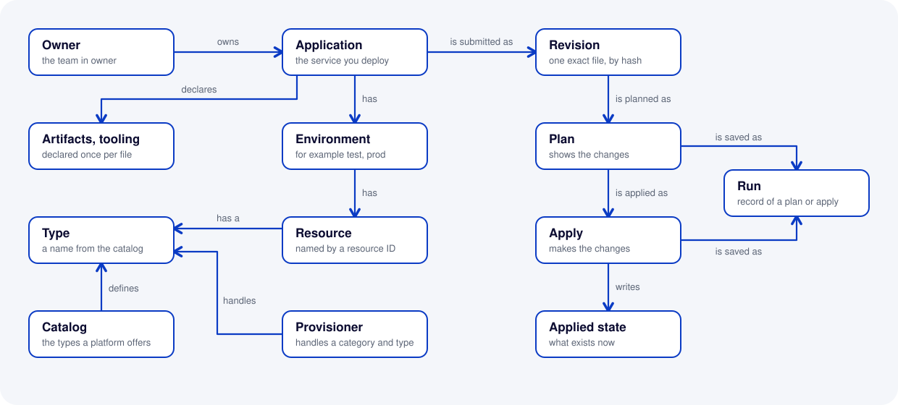

How Joomiz works
For feature teams and platform teams. This page names each thing in Joomiz and shows how the things relate. Other pages use these names and do not define them again.
The model in one picture

Read the picture from the application. The left part shows the things in your file and the things that the platform provides. The right part shows what happens when you plan and apply.
Application and owner
An application is the service that you deploy. The block application in the file gives, for example, its id, its name and its owner. Use the word application for the service only. For the act of applying a change, the word is apply.
The owner is the team named in owner in the file. A person who signs in is a user. The role owner:<team> lets a user act for that team. The role operator is for the platform team.
Revision
A revision is one exact file that was submitted for an application, identified by a hash. A hash is a short code that Joomiz computes from the bytes of the file.
Joomiz creates a revision when you run plan. A change of one character, even in a comment, makes a new revision. The same file always gives the same revision. The CLI prints the word revision at the end of a plan.
apply needs a revision that was planned. This is why you apply the same file that you planned.
Environment
An environment is a boundary, for example test or prod. Each environment has its own resources. A reference in one environment can name only the resources of that environment.
Each environment has its own apply lock. Only one apply can be active for an application and an environment. A second apply is refused at once.
Resource
A resource is one thing in an environment. You name it with a resource ID in the file. A resource belongs to one of four categories:
| Category | Section of the file | What it is | Example type |
|---|---|---|---|
| Target | targets | The place where a service runs | cloud-foundry-space |
| Deployment | deployments | An artifact on a target | cloud-foundry-app |
| Managed resource | managed-resources | A resource that Joomiz creates and owns for the application | postgres |
| Consumed resource | consumed-resources | A resource that another team owns, and the application uses | kafka-topic |
Two lists are not resources. They are written once for the whole file, not in an environment:
artifactslists what your build produces, for example ajar.toolinglists tools for the service, for examplerenovate.
Type and catalog
Every entry in the file has a type. A type is a name from the catalog, such as postgres. When you name a type, name its category too. For example: category managed resource, type postgres.
The catalog holds the types that a platform offers. For each type, it defines two things:
- The settings that an entry of this type needs. They go in the
specblock. - The outputs that a provisioner can report for this type.
The catalog also says which artifact types and target types a deployment type accepts. joomiz validate checks this.
The schema is the JSON Schema that the control plane publishes at GET /schema. It is built from the catalog. The platform team adds a type by releasing a new version of the control plane.
Provisioner
A provisioner is a service that does the work on the real resources of the types that it handles. The control plane calls a provisioner over HTTP when it plans and when it applies.
A provisioner also reports what really exists. Joomiz uses this to find drift. The platform team registers the provisioners.
Plan, apply and run
A plan shows what apply would change in one environment. A plan changes nothing. An apply makes the changes.
When a plan has several resources, Joomiz works in dependency order. For example, a database comes before the deployment that uses it.
A run is the history record of one plan or one apply. You list your runs with joomiz runs. A run has a status, for example succeeded or failed.
Changes
A change is the create, update or delete of one resource. A plan lists the changes. The CLI prints a change as (created), (updated) or (removed). This documentation says delete for removed.
Applied state
The applied state is what Joomiz believes exists now. A successful apply writes it. For each resource, it holds the type, the resource ID, the settings that were applied and the outputs that the provisioner reported.
A plan compares your file with the applied state. A plan shows only the difference.
The applied state is not your current file. Joomiz keeps a hash of each revision. It does not keep the text of the file. The applied state shows what the last apply recorded, not what the file says now.
Drift
Drift is a difference between the applied state and what really exists, for example when someone changes a resource by hand.
Before a plan computes the changes, it asks each provisioner what really exists. If a resource differs, the plan shows the drift and plans to put the values of the file back.
If a provisioner cannot answer, the drift check is incomplete for that resource. The plan says so. The CLI prints the word incomplete.
Reference and output
An output is a value that a provisioner reports after it creates a resource. A reference is a ${{ ... }} value in the file that points to a fact of the application or to an output.
For example, ${{managed-resources.shop-db.outputs.password}} points to the password output of the resource shop-db.
A plan resolves the references that it can. A value that does not exist yet reads (known after apply).
A sensitive output is the address of a secret in a vault. It is not the secret.
Related pages
- What Joomiz is explains the problem and the parts.
- Deploy your first service uses these things in a real task.